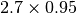

Cut Off¶
Reduces the maximum intensity of an image by clipping values above a threshold defined as a factor of the maximum intensity.
For example, if the pixel intensity in an image is 2.7 and the cut off threshold level is 0.95 then every pixel with an intensity value grater than 2.56 () will be clipped to 2.56.